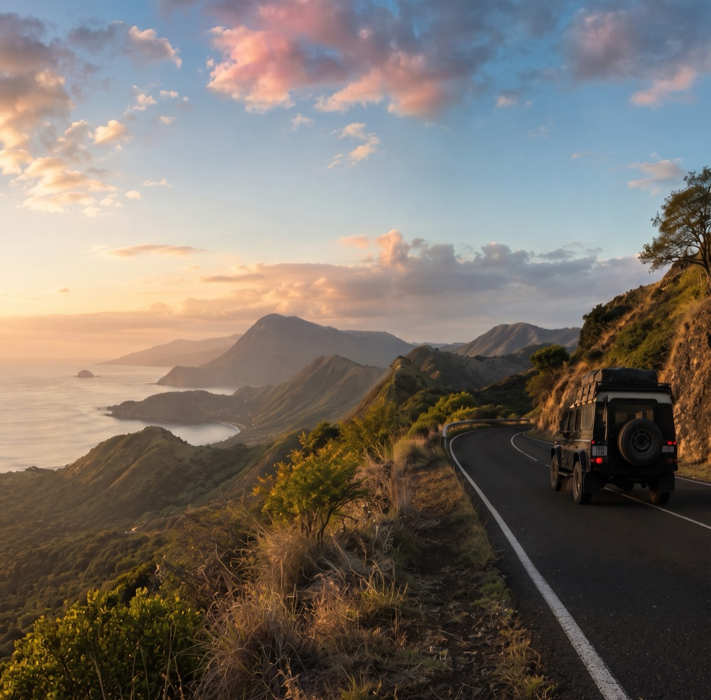

6 places left
20–26 August 2026 · Sulawesi
Rambu Solo: A Torajan Farewell
A considered week in the Toraja highlands, timed with local hosts around the ceremony calendar.
7 days · from Rp 34.000.000View →
Seasonal
Departures shaped around place and timing: calmer seas, harvest weeks, migration seasons, and ceremonies shared with the permission of local hosts.
Browse by destination20–26 August 2026 · Sulawesi
A considered week in the Toraja highlands, timed with local hosts around the ceremony calendar.

4–8 November 2026 · Bali
Five inland days between Sidemen, Munduk, and the quieter north-west coast.

12–18 September 2026 · Flores
Ridgeline walks, open water, and two unhurried nights beyond Labuan Bajo.

18–23 September 2026 · Java
From Yogyakarta's courtyards to the sea of sand below Mount Bromo.

3–8 December 2026 · Sumatra
Caldera mornings, village architecture, and long tables on Samosir Island.

10–18 December 2026 · West Papua
Nine days by private phinisi through reefs, limestone channels, and village waters.
No journeys match those filters. Try another region or month.